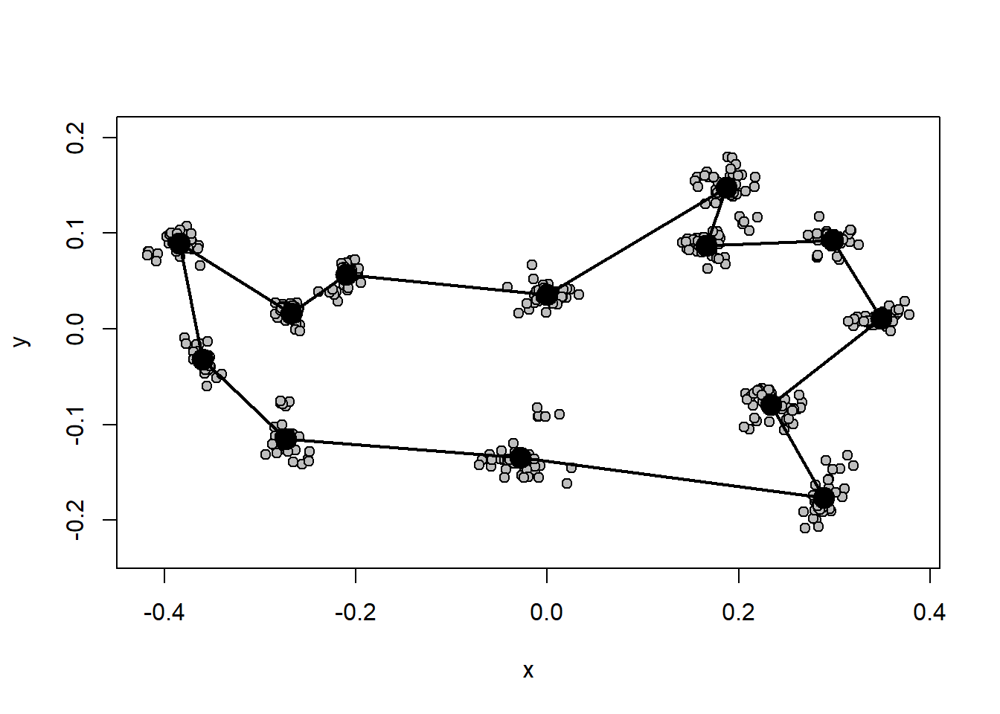
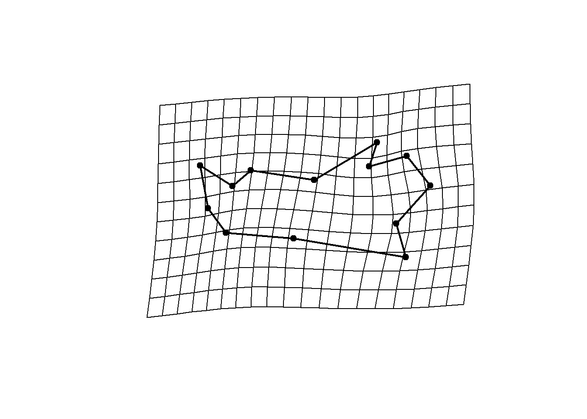
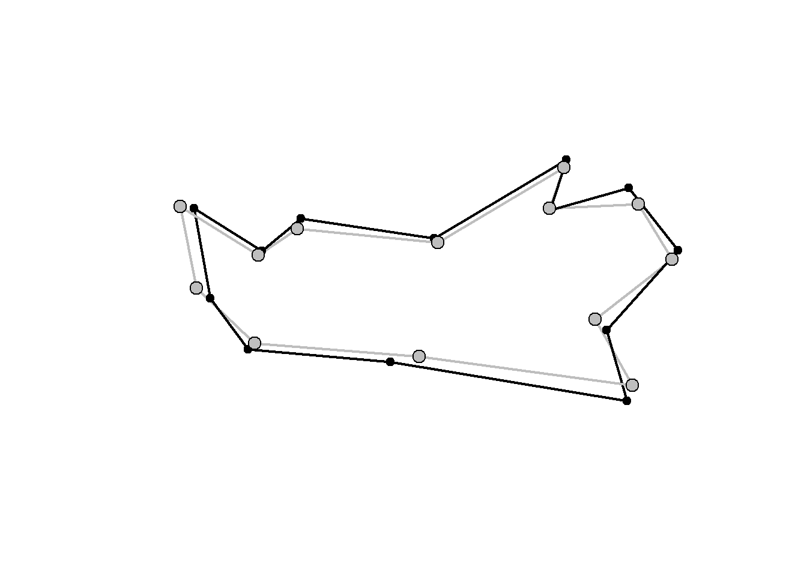

Capítulo 6 Visualização da forma
Existem várias maneiras de visualizar mudanças de forma com dados de Morfometria Geométrica (ver Klingenberg (2013)). Aliás, essa é uma das vantagens da morfometria geométrica em comparação com a morfometria tradicional. As formas mais comuns de visualização são por grids de deformação, vetores (ou lollipops), e através da construção de links entre os landmarks e extrapolação da forma via outlines e surfaces. Em qualquer caso, é importante perceber que a diferença de forma está contida apenas entre os landmarks/semilandmarks; as extrapolações de forma além dos landmarks (via grids e outlines, por exemplo) podem ser úteis para visualização, mas devem ser interpretadas com bastante cautela. É também importante perceber que a interpretação das mudanças de forma não deve considerar os landmarks individualmente, mas sim a sua mudança relativa a todos os outros landmarks.
Construção de forma média da amostra para comparação.
Construção de links entre os landmarks.
links<-matrix(c(1,2,2,3,3,4,4,5,5,6,6,7,7,8,8,9,9,10,10,11,11,12,12,13,13,1),nrow=13,ncol=2,byrow=T)
plotAllSpecimens(shape,mean=TRUE,links=links)
Os links entre os landmarks também podem ser definidos interativamente com a função define.links do pacote geomorph.
6.1 Método de grid de deformação.
# Definir cor dos landmarks e links
GP1<-gridPar(pt.bg="gray",link.col="gray",link.lty=1) # cor dos landmarks e links
# Gráfico de mudança de forma
plotRefToTarget(ref,shape[,,8],links=links,method="TPS")

6.3 Método de linhas.

Aqui, o alvo está em preto e a referência(média) está em cinza.
6.4 Método de outlines.
# Gráfico de mudança de forma
GP1<-gridPar(pt.bg="gray",tar.out.col = "red",tar.out.cex = 0.5)
plotRefToTarget(ref,shape[,,8],outline=outline$outline,method="TPS")

Com um número suficiente de pontos, dá-se a impressão de um desenho. Veja o exemplo do pacote geomorph.
data("plethodon")
Y.gpa<-gpagen(plethodon$land, print.progress = FALSE)
ref.y<-mshape(Y.gpa$coords)
GP4<- gridPar(tar.out.col = "red", tar.out.cex = 0.3)
plotRefToTarget(ref.y,Y.gpa$coords[,,39], gridPars=GP4, mag=3, outline=plethodon$outline, method="TPS")